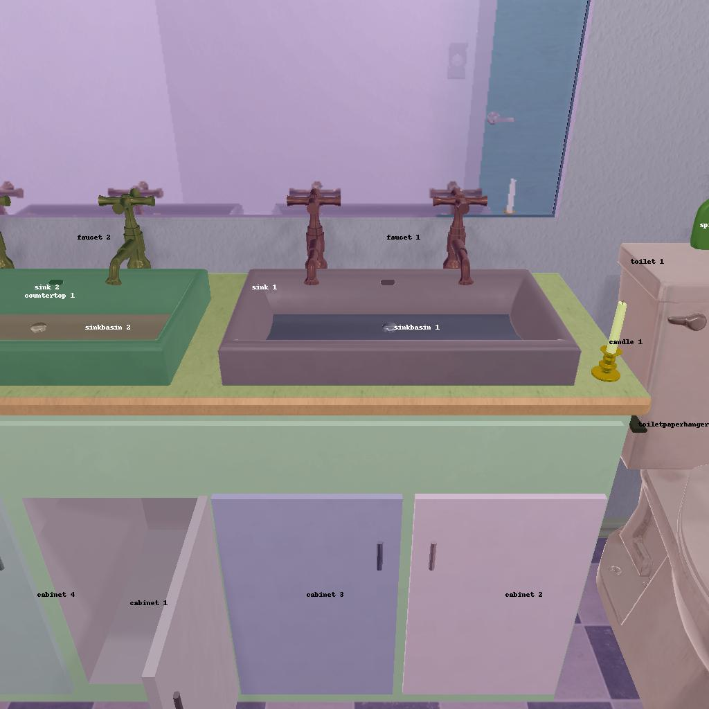

---------------------------------------------------------task: 9---------------------------------------------------------
--------------------------------------------------------------------------------------------------------------------------------------------------------------------
--------------------------------------------------------------------------------------------------------------------------------------------------------------------
Step:--------------------------------------------------------------------------13-------------------------------------------------------------------------------
----------------------------------------
VLM Prompt:
Image1:
Image2:
Image3:
**Instruction**
1. Analyze the provided image to identify all visible household objects, focusing on those relevant to the task description "put some soapbottle on toilet."
2. Use the analysis of the image and the task hint "The agent must find an object of the desired type, pick it up, find the correct location to place it, and put it down there." to answer the question: what is the most reasonable action in the choices for the task description "put some soapbottle on toilet"?
4. Decide and write the answer using the template: The answer is: (i): , where i is the real number. If there is no desired object in the image, search every place based on **Initial Observation** to find the object. And if no one is exactly correct, choose a similar answer.
**Initial Observation**
You are in the middle of a room. Looking quickly around you, you can see bathtub (1), bathtubbasin (1), toilet (1), cabinet (1-4), sink (1-2), countertop (1), sinkbasin (1-2), toiletpaperhanger (1), towelholder (1), garbagecan (1), handtowelholder (1)
**Answer Choices**
(1): go to bathtub 1
(2): go to bathtubbasin 1
(3): go to toilet 1
(4): go to cabinet 3
(5): go to sink 1
(6): go to sink 2
(7): go to countertop 1
(8): go to cabinet 4
(9): go to sinkbasin 1
(10): go to sinkbasin 2
(11): go to toiletpaperhanger 1
(12): go to towelholder 1
(13): go to garbagecan 1
(14): go to handtowelholder 1
(15): open cabinet 2
(16): close cabinet 2
(17): examine cabinet 2
**Answer**
Let's think step by step by following the instructions.
----------------------------------------
----------------------------------------
Original Response:
First, we identify all visible household objects in the image related to the task description "put some soapbottle on toilet." The toilet is visible in the image, labeled as "toilet 1." However, there is no soapbottle visible on the countertop, sinkbasin, or any open cabinet.
Given the task hint, the agent must find an object of the desired type, which is a soapbottle in this case. Since the soapbottle is not visible in the provided image, we must search every place based on the initial observation to find the object.
We can eliminate some answer choices that are irrelevant to finding a soapbottle, such as going to the toilet, bathtub, sink, etc. The most reasonable places to find a soapbottle would be in the cabinets or on the countertop. Since cabinets 1, 3, and 4 are closed in the image and cabinet 2 is the only one slightly open, it is the most likely place where a soapbottle could be found.
Therefore, the most reasonable action in the choices for the task description "put some soapbottle on toilet" would be to further examine cabinet 2 where a soapbottle may be stored.
The answer is: (17): examine cabinet 2.
----------------------------------------
----------------------------------------
>>> Refine Original VLM Response and Get Pure Action: examine cabinet 2
----------------------------------------
-----------------------------------------------------------------
Running time: 16.54037380218506 seconds
Total Money: 5.39038
-----------------------------------------------------------------
-----------------------------------------------------------------
Text Observation:On the cabinet 2, you see a faucet 1, a faucet 2, a candle 1, and a spraybottle 1.
-----------------------------------------------------------------
UNSUCCEED